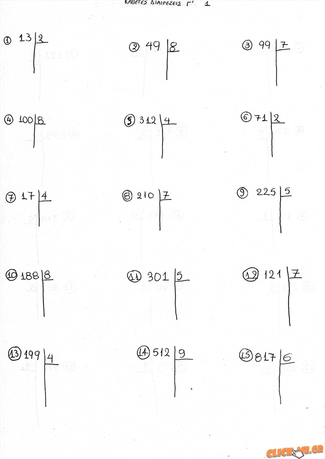

Υπουργείο Υγείας
Τρίτη, 20 Απριλίου 2021 Υλικό τύπου | Επικοινωνία Υπουργείο
Ηγεσία
Υπουργός Υγείας Αναπληρωτής Υπουργός Υγείας Υφυπουργός Υγείας (Ζωή Ράπτη) Γενικός Γραμματέας Δημόσιας Υγείας Γενικός Γραμματέας Υπηρεσιών Υγείας Γενικός Γραμματέας Πρωτοβάθμιας Φροντίδας ΥγείαςΟργανισμός
Οργανόγραμμα του Υπουργείου Υγείας Αρμοδιότητες του Υπουργείου Υγείας Εποπτευόμενοι Φορείς και Νομικά ΠρόσωπαΓραφείο Τύπου
Δελτία Τύπου Υλικό Τύπου ΥγείαΕμβολιασμοί Covid-19
Η Εθνική Εκστρατεία Εμβολιασμού για την covid-19 ξεκίνησε Εμβολιασμοί Covid-19 - Νησιωτική Ελλάδα 28/01/2021 Εμβολιασμοί Covid-19 - Κέντρα Υγείας 20/01/2021 Β. Κικίλιας: Οι εμβολιασμοί των υγειονομικών εξελίσσονται πολύ καλά Δήλωση Υπουργού Υγείας Βασίλη Κικίλια 83.850 δόσεις του εμβολίου των Pfizer/BioNTech φτάνουν αύριο το πρωί στην Ελλάδα Ξεκινούν αύριο οι εμβολιασμοί κατά της Covid-19 σε 4 Νοσοκομεία της Περιφέρειας Δήλωση Υπουργού Υγείας Βασίλη Κικίλια από το Γενικό Νοσοκομείο Αθηνών «Ο Ευαγγελισμός»Δημόσια Υγεία
Μέτρα πρόληψης έναντι κορονοϊού SARS-CoV-2 Υγιεινή Περιβάλλοντος Υγειονομικοί Κανονισμοί Δημόσιας Υγείας Μεταδοτικά και Μη Μεταδοτικά Νοσήματα ΕμβολιασμοίΠρωτοβάθμια Φροντίδα Υγείας
Δ/νση Πρωτοβάθμιας Φροντίδας Υγείας Νέα - Αρθρογραφία Δράσεις - Παρεμβάσεις και Προγράμματα Πρωτοβάθμιας Φροντίδας Υγείας Δημόσιες Δομές Πρωτοβάθμιας Φροντίδας Υγείας Νομοθεσία Πρωτοβάθμιας Φροντίδας ΥγείαςΑνάπτυξη Μονάδων Υγείας
Πρόσβαση των Ανασφάλιστων στο Δημόσιο Σύστημα Υγείας Ειδικές Μονάδες, Κέντρα, Ιατρεία Ιδρύματα Ιστών Εφαρμογή Ιστών και Κυττάρων Μεταμόσχευση Συμπαγών ΟργάνωνΕπαγγελματίες Υγείας
Νέα - Ενημέρωση Νοσηλευτές, Μαίες και Επισκέπτες Υγείας Επιστήμονες και Επαγγελματίες Υγείας Ιατροί, Οδοντίατροι και ΦαρμακοποιοίΔράσεις για την Υγεία
Ψυχική Υγεία Κωδικοποιήσεις-Διαδικασίες Εθνικά Σχέδια Δράσης Αντιμετώπιση εξαρτήσεωνΝοσοκομεία 2020
Α' Τρίμηνο 2020 Εφημερίδα της ΥπηρεσίαςΠρομήθειες-Συμβάσεις
Μελέτες και Έργα Προκηρύξεις Κεντρικής Υπηρεσίας Προσκλήσεις για απευθείας αγορά υγειονομικού υλικού, ατομικών μέτρων προστασίας και φαρμάκων με σκοπό την αντιμετώπιση του κορωνοϊού COVID-19 Παλαιότερες ΠροκηρύξειςΠροσκλήσεις Προσωπικού
Προσλήψεις προσωπικού στις Τ.ΟΜ.Υ. Προσλήψεις προσωπικού διαφόρων ειδικότητων για την αντιμετώπιση των κρουσμάτων του COVID-19 Εξειδίκευση στην Μ.Ε.Θ-Μ.Ε.Ν.Ν. Αγροτικοί Ιατροί Επικουρικοί Ιατροί Ιατροί Κλάδου Ε.Σ.Υ. Διοικητικό και λοιπό προσωπικόΑνακοινώσεις-Εγκύκλιοι
Παλαιότερες ΑνακοινώσειςΣτρατηγικός Σχεδιασμός
Αποφάσεις Στρατηγικών Στόχων Κέντρα Εμπειρογνωμοσύνης Σπανίων & Πολύπλοκων Νοσημάτων-ΠαθήσεωνΣτατιστικός Επικεφαλής
Μεταφορτώσεις αρχείων (Downloads) Για τους Συνδέσμους των Εποπτευόμενων Φορέων Κώδικας Ορθής Πρακτικής (εκδόσεως ΕΛΣΤΑΤ και EUROSTAT) Ανακοινώσεις Νομοθεσία Έννοιες και Ορισμοί Για τον ΠολίτηΔικαιώματα Ληπτών Υπηρεσιών Υγείας
Εκθέσεις Πεπραγμένων Γραφείων Προστασίας Δικαιωμάτων Ληπτών/τριών Υπηρεσιών Υγείας των Νοσοκομείων του Ε.Σ.Υ. Συχνές ερωταπαντήσεις Ενημέρωση για δράσεις Υπουργείου Υγείας και εποπτευόμενων φορέων Φορείς και αρμόδια όργανα προστασίας δικαιωμάτων Ειδική Επιτροπή Ελέγχου Προστασίας των Δικαιωμάτων των Ατόμων με Ψυχικές Διαταραχές Επιτροπή Ελέγχου Προστασίας των Δικαιωμάτων των Ληπτών Υπηρεσιών Υγείας Θεσμικό ΠλαίσιοΧρήσιμα Τηλέφωνα και Διευθύνσεις
Υπουργείο Υγείας Κεντρική Υπηρεσία Υγειονομικές Περιφέρειες Νοσοκομεία ανά Υγειονομική Περιφέρεια Μονάδες Υγείας Π.Ε.Δ.Υ. 1145 Τηλεφωνική Γραμμή Ψυχολογικής Υποστήριξης ΙΘΑΚΗ - ΚΕ.Θ.Ε.Α. 210 7793777 Kέντρο Δηλητηριάσεων 210 6401200 Ελληνική Αντικαρκινική Εταιρεία 197 Εθνικό Κέντρο Κοινωνικής ΑλληλεγγύηςΧρήσιμοι Σύνδεσμοι
Μη κυβερνητικές – μη κερδοσκοπικές οργανώσεις στήριξης ασθενών και των οικογενειών τους Οργανισμοί Φαρμακευτικοί Σύλλογοι Επιστημονικά Περιοδικά Ιατρικές Εταιρείες Ιατρικοί Σύλλογοι Ερευνητικά Κέντρα Κυβέρνηση - Εξυπηρέτηση ΠολίτηΕφημερίες Νοσοκομείων
Εφημερίες Νοσοκομείων ΑττικήςΕφημερίες Φαρμακείων
Εφημερίες Φαρμακείων Αττικής και ΘεσσαλονίκηςΕφημερίες Ιατρών
Εφημερίες ψυχιατρικών τμημάτων επικράτειας
ΕΦΗΜΕΡΙΑ ΨΥΧΙΑΤΡΙΚΩΝ ΤΜΗΜΑΤΩΝ 1ης & 2ης ΥΠΕ (Λεκανοπέδιο Αττικής) ΜΑΙΟΣ 2021 ΕΦΗΜΕΡΙΑ ΨΥΧΙΑΤΡΙΚΩΝ ΤΜΗΜΑΤΩΝ 6ης ΥΠΕ ΑΠΡΙΛΙΟΣ 2021 ΕΦΗΜΕΡΙΑ ΨΥΧΙΑΤΡΙΚΩΝ ΤΜΗΜΑΤΩΝ 3ης & 4ης ΥΠΕ ΑΠΡΙΛΙΟΣ 2021 ΕΦΗΜΕΡΙΑ ΨΥΧΙΑΤΡΙΚΩΝ ΤΜΗΜΑΤΩΝ 7ης ΥΠΕ ΑΠΡΙΛΙΟΣ 2021 ΕΦΗΜΕΡΙΑ ΨΥΧΙΑΤΡΙΚΩΝ ΤΜΗΜΑΤΩΝ 5ης ΥΠΕ ΑΠΡΙΛΙΟΣ 2021 ΕΦΗΜΕΡΙΑ ΨΥΧΙΑΤΡΙΚΩΝ ΤΜΗΜΑΤΩΝ 1ης & 2ης ΥΠΕ (λεκανοπέδιο Αττικής) ΑΠΡΙΛΙΟΣ 2021 ΕΦΗΜΕΡΙΑ ΨΥΧΙΑΤΡΙΚΩΝ ΤΜΗΜΑΤΩΝ 3ης & 4ης ΥΠΕ ΜΑΡΤΙΟΥ 2021 Εφημερία Ψυχιατρικών Τμημάτων 7ης ΥΠΕ Μαρτίου 2021 eHealth - Ηλεκτρονική ΥγείαΕνημέρωση διαπιστευμένων συντακτών για το Εθνικό Σχέδιο εμβολιαστικής κάλυψης κατά της COVID-19, από την Πρόεδρο της Εθνικής Επιτροπής Εμβολιασμών Μαρία Θεοδωρίδου και τον Γ.Γ. Πρωτοβάθμιας Φροντίδας Υγείας Μάριο Θεμιστοκλέους
περισσότερα»
Ζωή Ράπτη: Διευθύνσεις Ψυχικής Υγείας σε όλες ΥΠΕ
περισσότερα»
Ανακoίνωση Γραφείου Τύπου Υπουργείου Υγείας - Απάντηση στο Γραφείο Τύπου του ΣΥΡΙΖΑ
περισσότερα»
Η Υφυπουργός Υγείας Ζωή Ράπτη στη βράβευση του Περιφερειακού Διευθυντή Ευρώπης του ΠΟΥ, Hans Kluge από το ΑΠΘ
περισσότερα»
Επίσκεψη Αναπληρωτή Υπουργού Υγείας Βασίλη Κοντοζαμάνη στην υγειονομική μονάδα του Ελληνικού Στρατού που σταθμεύει στο ΓΝ Ελευσίνας "Θριάσιο"
περισσότερα»
Θέματα ενδιαφέροντος
Η Εθνική Εκστρατεία Εμβολιασμού για την covid-19 ξεκίνησε
Ψυχική Υγεία - Φροντίδα του εαυτού σας και διαχείριση του άγχους στην περίοδο της πανδημίας
Πρόγραμμα Ψυχολογικής Υποστήριξης
Δράσεις Αναβάθμισης των Νοσοκομείων
Γίνε δότης μυελού των οστών
Τήρηση καταλόγου επικουρικών ιατρών και διαδικασία τοποθέτησης
Η Επιδημία του COVID-19 ως σοβαρή ψυχοπιεστική συνθήκη για την Τρίτη Ηλικία - Οδηγίες για ηλικιωμένους
Οδηγός για υγειονομικό προσωπικό για την ψυχική διαχείριση της επιδημίας covid-19
Συντομεύσεις & σύνδεσμοι
BI-Health
Σύστημα Επιχειρηματικής Ευφυΐας ΕΣΥ
Οικονομικές Kαταστάσεις Νοσοκομείων
ανά έτος αναφοράς
Στατιστικός Επικεφαλής
Εφαρμογή του κώδικα ορθής πρακτικής για τις ευρωπαϊκές στατιστικές
Φάρμακα
Δελτία, Λίστες, Διατάξεις, Αξιολόγηση και Αποζημίωση
KEN-DRG
Κλειστά Ενοποιημένα Νοσήλια
Θεραπευτικά Πρωτόκολλα
Εφαρμογή στην ηλεκτρονική συνταγογράφηση
Δικαιώματα
Ληπτών Υπηρεσιών Υγείας
Επιτελική Δομή ΕΣΠΑ
Υπουργείου Υγείας
Εκπαιδευτικό υλικό
για εμβολιασμούς COVID19
E.Σ.A.N.
Εθνικό Συμβούλιο Ανάπτυξης Νοσηλευτικής
GDPR
Γενικός Κανονισμός Προστασίας Δεδομένων
Κε.Σ.Υ.
Κεντρικό Συμβούλιο Υγείας
Δελτία τύπου
Γίνε εθελοντής για την αντιμετώπιση της νόσου Covid-19
Ανακοίνωση για τις προσλήψεις επικουρικών ιατρών στα Νοσοκομεία και Κέντρα Υγείας όλης της χώρας
19/04/2021
Ενημέρωση διαπιστευμένων συντακτών για το Εθνικό Σχέδιο εμβολιαστικής κάλυψης κατά της COVID-19, από την Πρόεδρο της Εθνικής Επιτροπής Εμβολιασμών Μαρία Θεοδωρίδου και τον Γ.Γ. Πρωτοβάθμιας Φροντίδας Υγείας Μάριο Θεμιστοκλέους
19/04/2021
Ζωή Ράπτη: Διευθύνσεις Ψυχικής Υγείας σε όλες ΥΠΕ
19/04/2021
Προγραμματισμός ενημέρωσης διαπιστευμένων συντακτών Υπουργείου Υγείας για το Εθνικό Σχέδιο εμβολιαστικής κάλυψης για τη νόσο COVID-19
18/04/2021
Ανακoίνωση Γραφείου Τύπου Υπουργείου Υγείας - Απάντηση στο Γραφείο Τύπου του ΣΥΡΙΖΑ
18/04/2021
Η Υφυπουργός Υγείας Ζωή Ράπτη στη βράβευση του Περιφερειακού Διευθυντή Ευρώπης του ΠΟΥ, Hans Kluge από το ΑΠΘ
18/04/2021
Επίσκεψη Αναπληρωτή Υπουργού Υγείας Βασίλη Κοντοζαμάνη στην υγειονομική μονάδα του Ελληνικού Στρατού που σταθμεύει στο ΓΝ Ελευσίνας "Θριάσιο"
Πρόσφατες δημοσιεύσεις
16/04/2021Ενημέρωση αναφορικά με τη διάθεση (απόρριψη) αυτοδιαγνωστικών τεστ ταχείας ανίχνευσης αντιγόνου του ιού SARS-COVID -19 μετά την χρήση
Υγεία Δημόσια Υγεία Μέτρα πρόληψης έναντι κορονοϊού SARS-CoV-2 16/04/2021
Συστάσεις για την ατμοσφαιρική ρύπανση
Υγεία Δημόσια Υγεία Υγιεινή Περιβάλλοντος Προστασία Ποιότητας Αέρα 16/04/2021
Ηλεκτρονικός Ανοικτός Δημόσιος Διαγωνισμός για την Παροχή Υπηρεσιών Συντήρησης και Επέκτασης του Πληροφοριακού Συστήματος Επιχειρηματικής Ευφυΐας (ΒΙ-Health) του Υπουργείου Υγείας 4/2021
Εφημερίδα της Υπηρεσίας Προμήθειες-Συμβάσεις Προκηρύξεις Κεντρικής Υπηρεσίας 14/04/2021
Εκδηλώσεις θρομβώσεων και θρομβοπενίας μετά τον εμβολιασμό για τη νόσο COVID-19
Υγεία Δημόσια Υγεία Εμβολιασμοί Συστάσεις εμβολιασμού κατά την περίοδο της πανδημίας COVID19 08/04/2021
Εγκύκλιος Δ1δ/Γ.Π.οικ 21793/07-04-2021 "Επισήμανση φυσικών μεταλλικών νερών –ενδείξεις στις ετικέτες των φιαλών των φυσικών μεταλλικών νερών"
Υγεία Δημόσια Υγεία Υγιεινή Περιβάλλοντος Προστασία Ποιότητας Υδάτων Ποιότητα εμφιαλωμένων νερών 07/04/2021
Προκήρυξη Συνοπτικού Διαγωνισμού για την οργάνωση και υλοποίηση του Μηχανισμού Επικαιροποίησης & Σχεδιασμού για τον συντονισμό, υλοποίηση και παρακολούθηση εφαρμογής δράσεων για τον εκσυγχρονισμό των επιχειρησιακών δράσεων και λήψης αποφάσεων εξαιτίας της
Εφημερίδα της Υπηρεσίας Προμήθειες-Συμβάσεις Προκηρύξεις Κεντρικής Υπηρεσίας 06/04/2021
Ένταξη φαρμάκου στον Κατάλογο Αποζημιούμενων Φαρμάκων
Φάρμακα Επιτροπή Αξιολόγησης και Αποζημίωσης Φαρμάκων 02/04/2021
Δελτίο Τιμών Νέων Γενοσήμων Φαρμάκων Ανθρώπινης Χρήσης Ιανουαρίου 2021
Φάρμακα Δελτία Τιμών
Υπουργείο Υγείας
Αρχική Υπουργείο Υγεία Εφημερίδα της Υπηρεσίας Για τον Πολίτη eHealth - Ηλεκτρονική Υγεία Χάρτης ιστοσελίδας Όροι χρήσης ΕπικοινωνίαRSS
Όλο το moh.gov.gr Υπουργείο Υγεία Εφημερίδα της Υπηρεσίας Για τον Πολίτη eHealth - Ηλεκτρονική ΥγείαΕφημερίες
Copyright © Υπουργείο Υγείας 2021 Σχεδιασμός & Ανάπτυξη Datahost